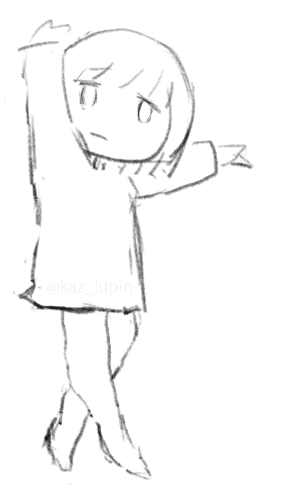
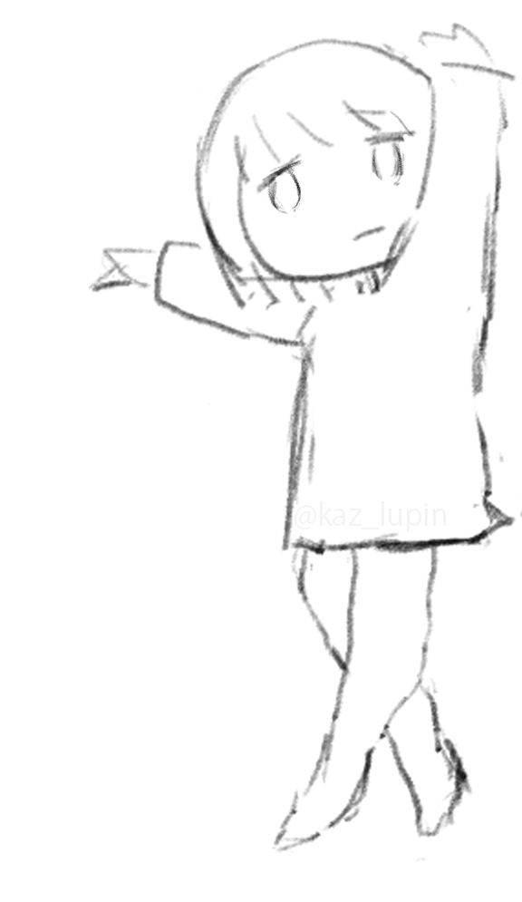

STEP 01
曲を選ぶ
曲名は一覧の表記をそのまま収録。追加した曲もポスターに反映されます。
STEP 02
背景を選択
↑ ↓ で順番を変更できます。
画像は縦長・SNS投稿向け（1080 × 1920 px）で保存されます。
PREVIEW

SETLIST POSTER MAKER

STEP 01
曲名は一覧の表記をそのまま収録。追加した曲もポスターに反映されます。
STEP 02
↑ ↓ で順番を変更できます。
画像は縦長・SNS投稿向け（1080 × 1920 px）で保存されます。
PREVIEW